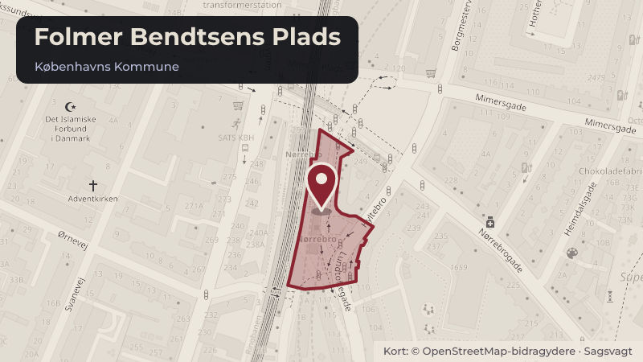

Behandlet 29. oktober, Bispebjerg Lokaludvalg
Intern Høring: projektforslag for Folmer Bendtsens Plads

Kort fortalt
- Forslaget
- Bispebjerg Lokaludvalg giver forpersonskabet mandat til at sende et høringssvar efter det har været 2. behandlet på Bymiljøudvalgsmødet d. 5. november.
- Hvem
- Bispebjerg Lokaludvalg
- Hvornår
- Torsdag 29. oktober 2026
- Status
- Behandlet. Referatet med beslutningen er ikke offentliggjort endnu.
Er noget forkert her? Skriv til os
Læs hele sagen Kommunens egen tekst
Indstilling
Det indstilles,
1. at Bispebjerg Lokaludvalg giver forpersonskabet mandat til at sende et høringssvar efter det har været 2. behandlet på Bymiljøudvalgsmødet d. 5. november.
Problemstilling
Klima-, Teknik- og Miljøforvaltningen har udarbejdet et forslag til forbedring af byrummet ved Nørrebro Station. Forslaget indeholder forslag til plantning af nye træer, nye plantebede og flytning af toilettet ved 7-Eleven på Nørrebro Station til Folmer Bendtsens Plads.
I den sydlige del af pladsen bliver der grønne øer med blomster, buske og små træer. De skal give pladsen mere liv og skærme bænkene mod trafikken. Fra det tidlige forår til efteråret vil der være blomster og planter, der skifter udtryk med årstiderne. Der vil være flere muligheder for at finde en god siddeplads. Nye bænke kommer til at ligge tæt på de grønne områder. På stationsforpladsen kommer en rundbænk rundt om et nyt træ, og ved Hyltebro bliver der også en bænk under et nyt træ.
Cykelparkeringen på højbanens vestside får samtidig en ny løsning. De høje cykelstativer og overdækningen forsvinder, og i stedet kan man parkere cyklen i ét niveau. Tre nye træer giver mere grønt mellem cyklerne, mens klatre- og slyngplanter skal gøre hegnet bag dem grønnere.
De nye træer og blomster får selskab af de træer, der allerede står på pladsen. De bevares alle, så de også bliver en del af det grønnere byrum.
Lokaludvalget sidder i en følgegruppe til projektet sammen med Områdefornyelse Bispeengbuen og Nørrebro Lokaludvalg.
Høringen vil kunne blive behandlet af bymiljøudvalget d. 5. november.
Høringsfristen er d. 9. november.
Der holdes et offentlig arrangement om projektforslaget tirsdag den 27. okt kl 15-17 på Folmer Bendtsens Plads.
Projektforslag som skal politisk behandles vinter/foråret 2027
Man kan se mere om projektet her: Folmer Bendtsens Plads | Nørrebro Stationsområde
Løsning
1. Lokaludvalget tager præsentationen til efterretning.
2. Lokaludvalget giver forpersonskabet mandat til at sende et høringssvar.
Bilag
- Eksisterende forhold med bindinger.pdf
- Eksisterende forhold.pdf
- NØR illustreret situationsplan.pdf
- NØR set fra Lundtoftegade.jpg
- NØR set fra Ornevej.jpg
- NØR staudesammensætning_EFFEKT.png
Kilde: Københavns Kommune, Bispebjerg Lokaludvalg, dagsorden fra mødet torsdag 29. oktober 2026, punkt 9. Læs den originale sag hos kommunen.
Steder i sagen: Folmer Bendtsens Plads